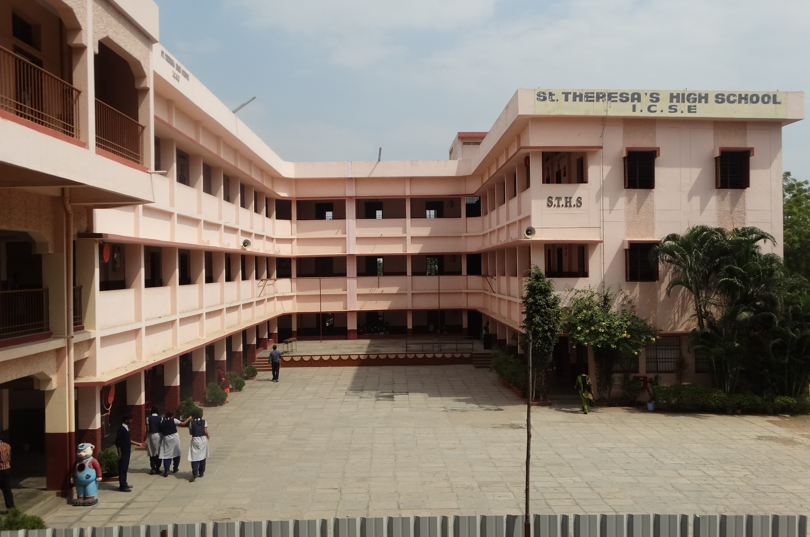
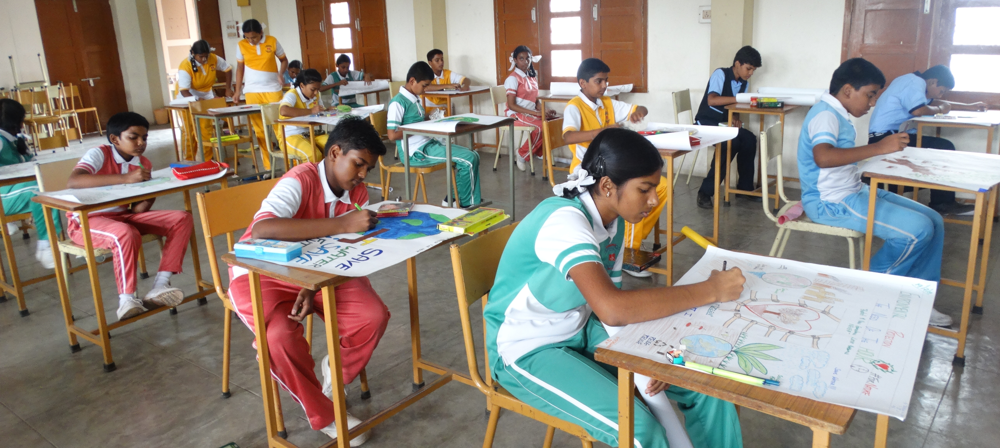

Our School
St.Theresa High School(ICSE) Arul Colony (Co-Education) is a Roman Catholic, Minority Institution established by the Society of the Sisters of St.Ann, Luzern (SAL) on 15th June 1992.The Society of St.Ann was founded by Fr.Wilhelm Meyer at Luzern in Switzerland in the year 1909. The School prepares the students for the Indian Certificate of Secondary Education (ICSE) Examination, through English Medium. The school aims at providing holistic education to all the students.
Campus life
My school life has been an amazing journey so far. I started my education in a small primary school and then moved on to a bigger secondary school. Throughout my school life, I have been fortunate enough to have experienced a positive and supportive learning environment. I have made many great friends, learned valuable lessons and developed my passion for learning. My school life has not just been about studying and getting good grades, it has also been about extracurricular activities and sports. I have been a member of the school's debate club, music club and basketball team. Participating in these activities has not only helped me to build my skills and confidence, but it has also allowed me to meet new people and form new relationships.
Our Achievements
Academic achievement or academic performance is the extent to which a student, teacher or institution has attained their short or long-term educational goals. Completion of educational benchmarks such as secondary school diplomas and bachelor's degrees represent academic achievement. Academic achievement is commonly measured through examinations or continuous assessments but there is no general agreement on how it is best evaluated or which aspects are most important—procedural knowledge such as skills or declarative knowledge such as facts.[1] Furthermore, there are inconclusive results over which individual factors successfully predict academic performance, elements such as test anxiety, environment, motivation, and emotions require consideration when developing models of school achievement.

What's New
The objective of this Institution is to prepare future citizens who would think and work for the Motherland with a spirit of dedication, irrespective of their differences in caste, creed or religion. It expects the child to turn out to be a person of God and good character from whom knowledge, high principles, culture and refinement will overflow to the society in which he/she lives. Holistic development of our students with sound intellectual,physical,psychologocal,emotional and moral maturity that will pave the way for a truly democratic, secular and equitable social order.

Contact Us
ST.THERESA HIGH SCHOOL
SAL (ICSE), NEW DELHI
ARUL COLONY,ECIL POST.,
HYDERABAD-500 062
PHONE:040-27124329
E-MAIL:sttheresahyd@gmail.com
Website:www.sal-sths.in